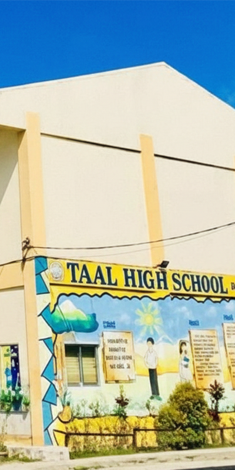
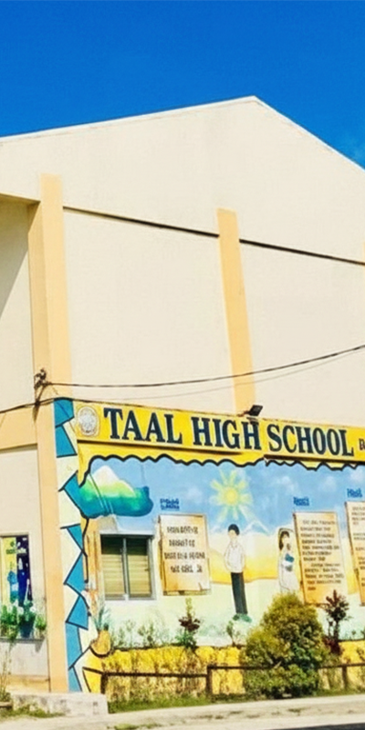
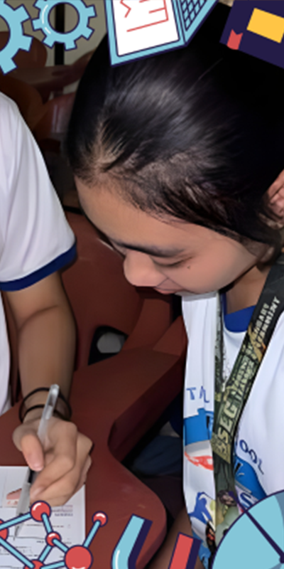
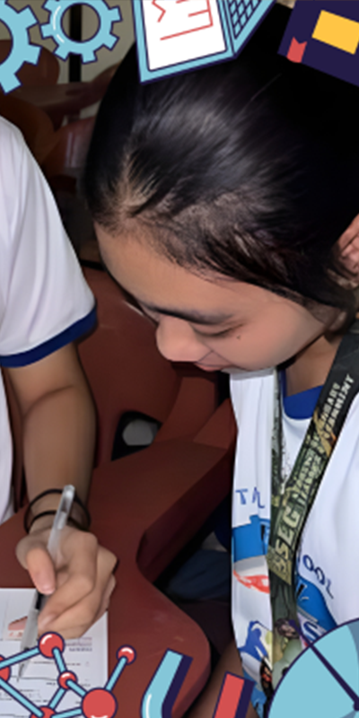

Orientation
The orientation brought together students, parents, and teachers for an introduction to the program. Participants were guided through its goals, expectations, and schedule, helping everyone begin with a clear and informed understanding.
A story of curiosity, collaboration, and digital empowerment. See how our learners, teachers, and partners building a future-ready community through coding.
Explore 

 


Taal High School’s journey with iamtheCODE began with a commitment to quality education and digital skills. Together, we empower students to grow as creative, confident learners and future innovators, building an environment where they are encouraged to dream boldly and reach their full potential.
Key milestones and events have defined our iamtheCODE journey, guiding us toward greater impact and purpose. These moments highlight the progress of our learners, the passion of our educators, and the strength of our community. Each step forward brings us closer to unlocking the potential of every student.

Students, parents, and teachers introduced to the program. Orientation materials, goals, and schedules were shared.
The orientation brought together students, parents, and teachers for an introduction to the program. Participants were guided through its goals, expectations, and schedule, helping everyone begin with a clear and informed understanding.

The program began with a powerful welcome from Lady Mariéme Jamme, setting a meaningful tone for our journey. Her inspiring message underscored the critical importance of learning to code today. Through iamtheCODE, we will not only gain coding skills but also build our confidence, as technology is a key pathway to greater opportunity.
Ryda Jane R. Estrella
"One of the core components of the IAmTheCode program is the "Coding for Climate" session. This module focuses on raising awareness of environmental issues and demonstrating how technology can provide solutions. It includes three papers: “What is Deforestation?”, “What is Recycling?”, and “What is Pollution?” These documents detail the negative human impact on nature and propose actionable ways to reduce it. I found the session particularly enlightening, as it prompted me to reflect on my local environment. It also helped me realize that even small, intentional actions can contribute to significant positive change for our planet."
John Warren A. Entoma
"My introduction to HTML revealed it to be the fundamental backbone of all web documents and applications. What stands out is that it remains accessible to learn, despite its powerful capabilities. The iamtheCODE program was instrumental in helping me grasp HTML with greater ease. Through structured lessons, I studied the core components, structure, and purpose of HTML documents. The program provided hands-on coding experience while offering the supportive guidance I needed. In this way, iamtheCODE has become the foundation for pursuing my aspirations, with HTML serving as my essential first step into the world of coding."
Jan rain D. Pasilan
"This week, I learned how CSS styles webpages and unlocks creativity. I experimented with colors, fonts, and layouts, discovering that good design balances aesthetics with clarity. The freedom to express myself through design made coding feel more like meaningful creation—a direct reflection of my personal growth in the iamtheCODE program."
Eunice Althea C. Estrella
"This week was the most challenging so far in my iamtheCODE journey, as I tackled logic, variables, and functions in JavaScript. At first, the concepts were confusing, and I spent a lot of time debugging code that didn’t work as planned. There were discouraging moments, but I kept my original motivation in mind. When my first script finally ran successfully, I felt genuine pride. That breakthrough reminded me that patience and persistence are key—and that debugging isn’t failure, but an essential part of learning to code."
Angela Faye C. Medina
"This week, I integrated everything I had learned. It was rewarding to see how the individual lessons from earlier sessions connected. The Blueberries Laboratory project was especially challenging, requiring a complete website with proper structure and design. Completing it brought me a real sense of accomplishment, and I could clearly see my progress. I also learned the value of planning. Rushing led to mistakes, but organizing my ideas first made the process much smoother. This week reinforced that coding is not just about writing instructions, but about strategy, patience, and thoughtful design."
Justine Raven L. Deluso
"Transitioning from web coding to Python was more challenging than I anticipated. The syntax seemed simple, but I often felt unsure of my next steps. I built small programs like Robot Race and Magic 8 Ball, and it was rewarding to see them run. Yet, I encountered logical errors that changed how my code behaved. I also struggled with Python's strict indentation, which taught me that spacing truly matters. Despite the challenges, I enjoyed it. Python showed me that coding extends far beyond websites—it's also a powerful tool for data, automation, and problem-solving."
Rafael F. Lazarte
"This week was about mindset and taking care of myself. At first, I wondered what it had to do with coding. But I understand now. Coding can be really frustrating when your code just won't work, and it's easy to feel stuck. I learned that it's okay to take a break, to breathe, and to believe I'm getting better step-by-step. It showed me that coding isn't only about learning how to write programs. It's also about being patient with myself and paying attention to how I feel while I learn."
Kim Jewel P. Laolao
"As part of the IAmTheCode program, I learned about the UN's 17 Sustainable Development Goals. I saw how these big global goals connect to real-life challenges in my community and the environment. It made me think differently about coding—it's not just about making apps or websites, but also a tool to help solve problems and make the world better. I now understand that even my small actions can add up to big change."
Leonardo genesis S. Tino"This week was about creativity and empathy through design thinking. We learned its five stages: Empathize, Define, Ideate, Prototype, and Test. It's a method used in tech and innovation to build solutions that truly help people. I liked how it taught us to understand users first, before even thinking about the code. This approach made me realize that good coding starts with careful listening and observing. It's not just about building programs—it's about solving real problems and making lives better. This changed my view of programming. I now see it as both a technical skill and a way to care for others."
Johnlloyd R. Solana"I always thought communication had nothing to do with coding, but this week I was proven wrong. I learned that explaining ideas clearly is just as important as writing good code. We practiced sharing our thoughts, listening carefully, and giving helpful feedback. It made me realize how much smoother and easier it is to solve problems when everyone understands the goal and shares their own ideas. Through this experience, I saw that being a programmer also means being a good teammate. A team can't work well if they don't talk and listen to each other. Collaboration and understanding are just as important as technical skills for making a project succeed."
Dennis N. Arcilla
"This week pushed me outside my comfort zone with our focus on presentations. I’ve never enjoyed speaking in front of others, and just thinking about it made me nervous. To make it easier, I prepared simple and clear slides so I wouldn’t have to talk too much. I got positive feedback on how organized my slides were, but the experience itself still felt really draining. It confirmed that presenting isn’t something I enjoy. However, it also reminded me that growth often happens outside of what feels comfortable—even when I’d rather avoid it altogether."
Rhina Liza V. Agustin
"In Project Management (Module 12, Phase 2 of IamtheCode), I learned key steps like defining a project’s scope and team first, then planning the budget and schedule. I also learned to minimize risks and maximize quality by preparing ahead and using best practices for risk, quality, and procurement management. Additionally, I learned how to handle changes, communicate with stakeholders, and resolve conflicts. Finally, I studied how to close projects effectively—adjusting timelines, managing budgets, and deciding when to complete or cancel a project."
Kiara Chelsea V. Pogonia
On a remarkable venture, DYCI and THS signed a memorandum of agreement on uplifting the programming skills of Taalians, as part of the IamtheCODE Project, where THS is among the only three schools in the Philippines to be the pilot implementers.
Moreover, DYCI shared their expertise on robotics to feed the hungry for knowledge Taalians to further ignite their computer literacy last April 2 at the Marciano Campus, Wakas, Bocaue, Bulacan.
During the 1-day training, 100 Taalians enthusiastically joined the training as they are excited to level up their knowledge on robotics — a program that DYCI is known worldwide.
This is truly grateful to Mr. Michael S. Yanga, President of DYCI and Ms. Mary Ann Lim, Dean of College of Computer Studies in extending their goal on enhancing the 21st century skills among students and shaping them to the necessary skills useful in their future careers in technology.
This milestone once again has proven the determination of Taalians to ameliorate their skills in technology as they opened their arms and minds in grasping new skills ahead of them.
© 2025 Taal High School | iamtheCODE journey
All rights reserved.